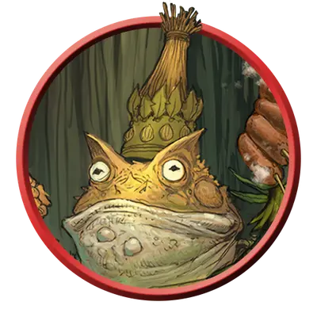

Болотный мудрец-жаболюд
Bullywug Bog Sage
Средняя Фея, Нейтральная

Класс Защиты 16 Инициатива +3 (13)
Хиты 52 (8к8 + 16)
Скорость 30 футов, Плавания 30 футов
| мод | спас | ||
|---|---|---|---|
| СИЛ | 8 | −1 | −1 |
| ЛОВ | 16 | +3 | +3 |
| ТЕЛ | 14 | +2 | +4 |
| мод | спас | ||
|---|---|---|---|
| ИНТ | 10 | +0 | +0 |
| МДР | 16 | +3 | +5 |
| ХАР | 12 | +1 | +1 |
Чувства пассивное Восприятие 13
Языки Общий, Сильван, Язык Жаболюдов
Опасность 4 (1 100 опыта; БВ +2)
Особенности
Амфибия. Болотный мудрец может дышать как воздухом, так и под водой.
Разговор с лягушками и жабами. Болотный мудрец может передавать простые сообщения лягушкам и жабам, когда говорит на языке Жаболюдов.
Действия
Мультиатака. Болотный мудрец совершает две атаки Болотным посохом. Он может заменить одну атаку на использование Сотворения заклинаний, сотворяя Луч болезни.
Болотный посох. Бросок рукопашной атаки: +5, досягаемость 5 фт. Попадание: 7 (1к8 + 3) Дробящего урона плюс 10 (3к6) урона Ядом.
Сотворение заклинаний. Жаболюд сотворяет одно из следующих заклинаний (заклинательная характеристика — Мудрость, Сл спасброска заклинаний 13, +5 к попаданию атак заклинаний):
Неограниченно: Искусство друидов, Луч болезни, Пляшущие огоньки
1/день каждое: Едкий шар, Разговор с растениями
Бонусные действия
Прыжок. Жаболюд может прыгнуть на расстояние до 30 футов, потратив 10 футов перемещения.
Бонус мастерства +2
Среда обитания Болота
Сокровища Личные, Инструментальные
Жаболюды
Познавшие болота и топи амфибии
Жаболюды — это Феи, воплощающие суть болот. Они охраняют мрачные, дикие места и верят, что в этом и есть цель их существования. Эти существа размером с человека напоминают жаб или лягушек и тесно связаны с другими обитателями болот.
Болотные мудрецы жаболюдов с помощью магии болот общаются с растениями и ослабляют врагов.